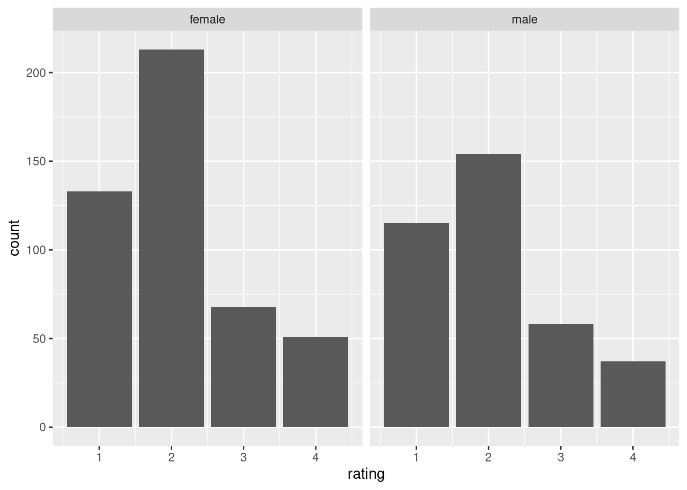
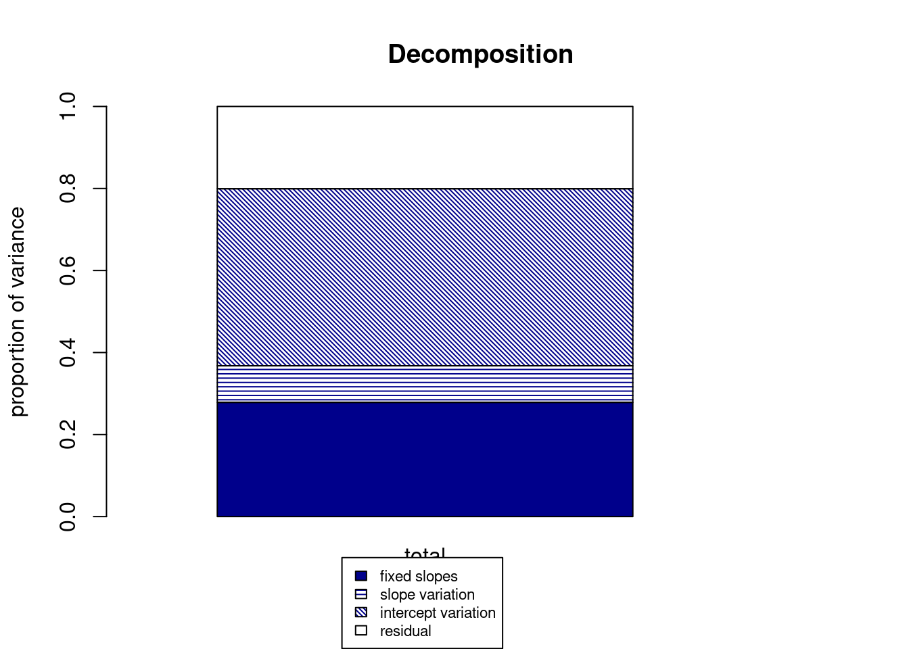
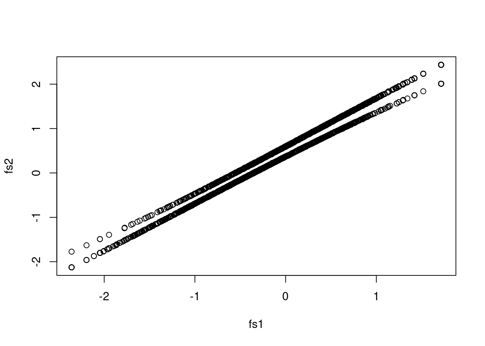
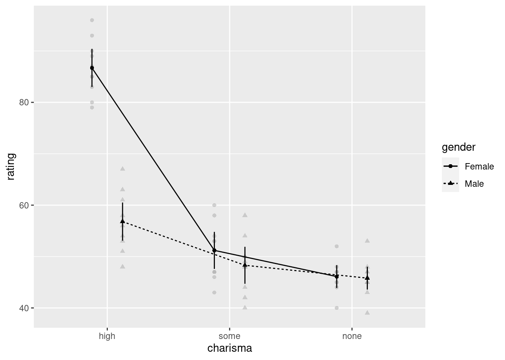
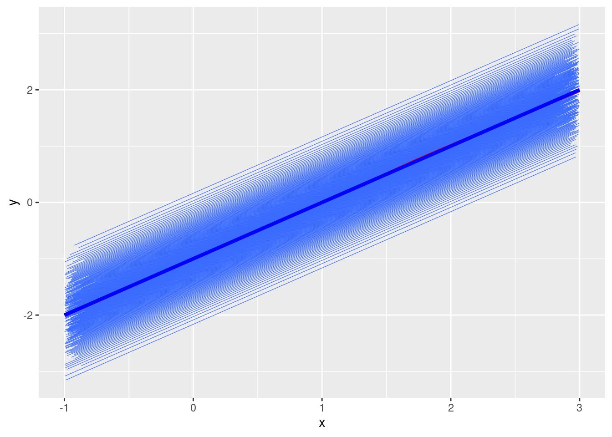
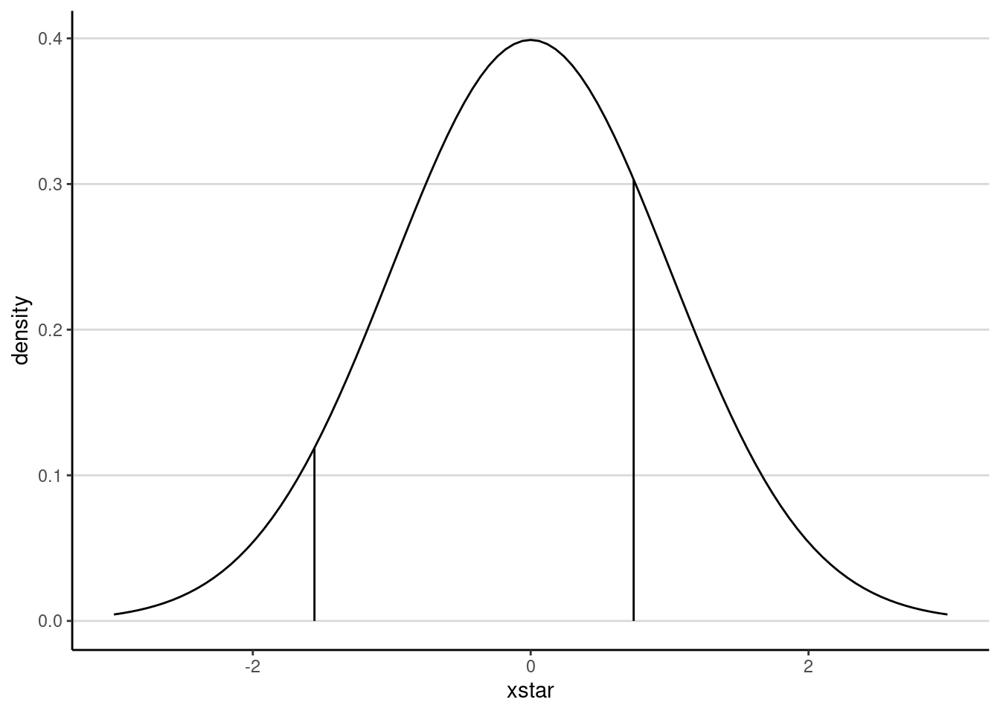
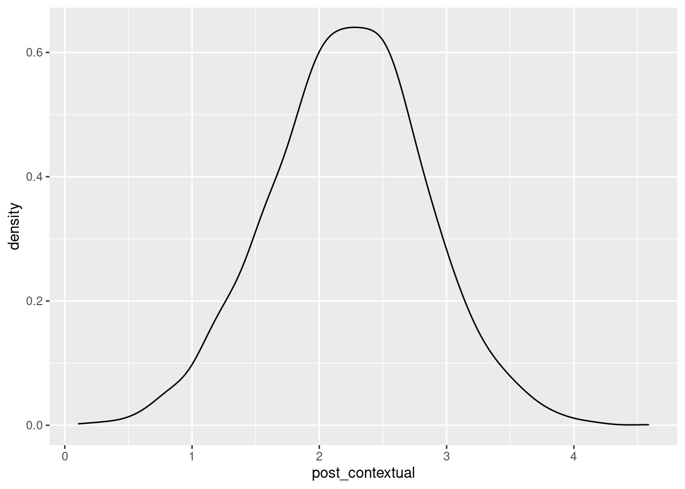

Mark Lai
Home
Posts
Publications
Software
Courses
Presentations
Posts
Multilevel Composite Reliability
This is a short blog post on computing multilevel reliability based on Lai (2021).
Nov 13, 2022
Mark Lai

Nominal Regression in STAN
I was talking to a…
Jul 30, 2022
Mark Lai
Scaling and Standard Errors in SEM
In this post, I demonstrate why rescaling a coefficient (i.e.…
Jun 17, 2022
Mark Lai
Estimating a 2-PL Model in Julia (Part 2)
\[ \newcommand{\bv}[1]{\boldsymbol{\mathbf{#1}}} \]
May 28, 2022
Mark Lai
Estimating a 2-PL Model in Julia (Part 1)
The semester is finally over, and for some reason, I wanted to consolidate my understanding of some psychometric models, perhaps because I’ll be teaching a graduate…
May 19, 2022
Mark Lai

Confidence Intervals for Multilevel R-Squared
The marginal
\(R^2\)
considers the total variance accounted for due to the fixed effect associated with the predictors (
Days
in this example). See Nakagawa…
May 12, 2022
Mark Lai
Actor Partner Interdependence Model With Multilevel Analysis
Every time I teach multilevel modeling (MLM) at USC, I have students interested in running the actor partner independence model (APIM) using dyadic model. While such models…
Oct 23, 2021
Mark Lai

IRT Scoring With Covariates
I was working on an extension to the two-stage path analysis Lai & Hsiao (2021) related to integrative data analysis, and ran into an issue described in Da…
Sep 13, 2021
Mark Lai
Using cmdstanr in SimDesign
[Update: Use parallel computing with two cores.]
Jul 14, 2021
Mark Lai

Mixed Factorial ANOVA in R
The fictional data set is part of the data library of the JASP software, and is from the book by Field (2017)
1
. Here it only contains a subset of the data, where 10 men and 10 women for three speed-dating partners. All three partners were low in…
Mar 29, 2021
Mark Lai

Unit-Specific vs. Population-Average Models
One thing that I always felt uncomfortable in multilevel modeling (MLM) is the concept of a unit-specific (US)/subject-specific…
Dec 28, 2020
Mark Lai
Piping with
magrittr
I have just spent a semester teaching multilevel modeling, and in the R codes I provided, I usually use the pipe operator (
%>%
).…
Dec 16, 2020
marklai

Weighted Least Squares
Recently I was working on a revision for a paper that involves structural equation modeling with categorical observed variables, and it uses a robust variant of weighted…
Jun 12, 2020
Mark Lai
Asymptotic Standard Errors in CFA
In our lab meeting I’m going to present the article by
Maydeu-Olivares (2017)
, which talked about standard errors (SEs) of the maximum likelihood estimators (MLEs) in SEM models. As I’m also working on something relevant, and I haven’t found some…
Apr 11, 2020
Mark Lai
Using Julia to Find MLE for a Factor Model
I’ve been staying home for a bit more than a week now. While keep working on my research, I also think it may help fill my time by picking up some skills. I’ve been…
Mar 7, 2020
Mark Lai
Model Selection for Multilevel Modeling
In social sciences, many times we use statistical methods to answer well-defined research questions that are derived from some theory or previous research. For example…
Dec 26, 2017
Mark Lai

Bayesian MLM With Group Mean Centering
This post is re-rendered on 2023-08-10 with cleaner and more efficient
STAN
code.
Aug 1, 2017
Mark Lai
No matching items